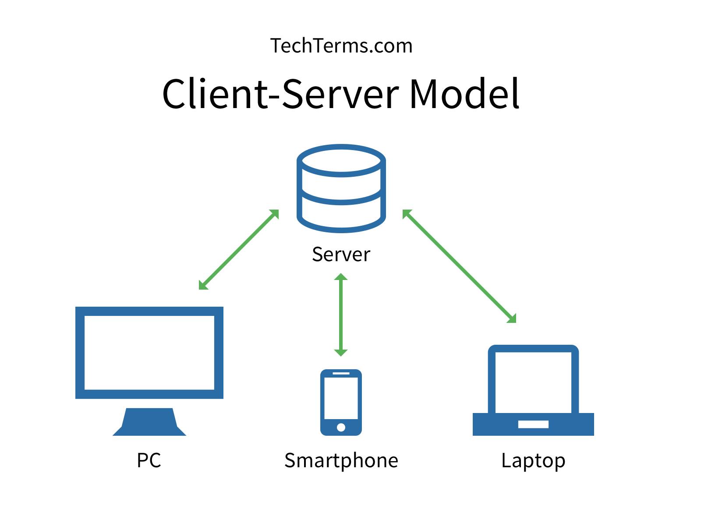
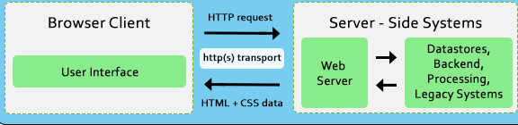
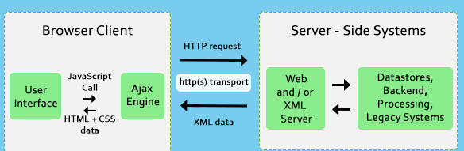
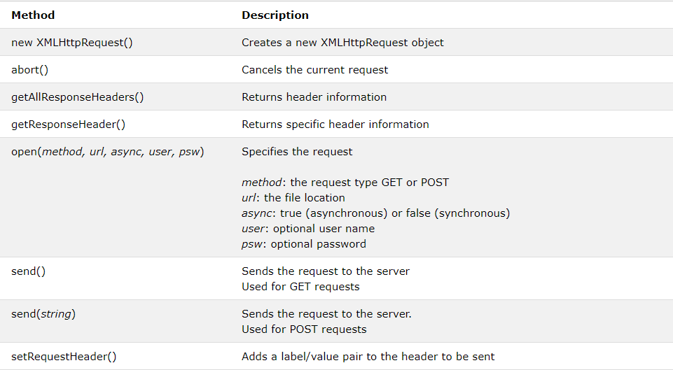
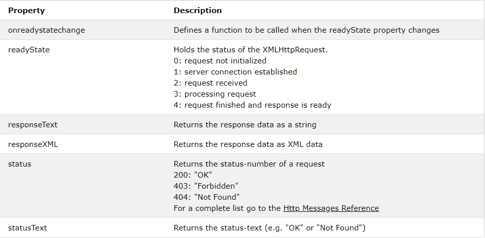
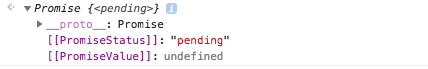
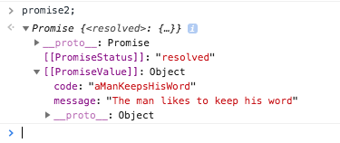
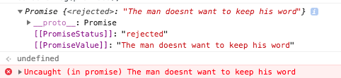

AJAX & Promises
HTML presentation
RSSchool. 2018Q3
Client & Server
Client sends requests... Server answers...
Traditional Web Application Model
Page is reloaded....

It was...
And now it happens...
AJAX
AJAX is a developer's dream, because you can:
- Read data from a web server - after the page has loaded
- Update a web page without reloading the page
- Send data to a web server - in the background
How it works
"Asynchronus Javascript and XML"
XMLHttpRequest
A browser built-in object...
Syntax for creating an XMLHttpRequest object:
const xhttp1 = new XMLHttpRequest();
let xhttp2 = new XMLHttpRequest();
XMLHttpRequest Object Methods
XMLHttpRequest Object Properties
XMLHttpRequest example
function loadDoc() {
const xhttp = new XMLHttpRequest();
xhttp.onreadystatechange = function() {
if (this.readyState == 4 && this.status == 200) {
document.getElementById("demo").innerHTML = this.responseText;
}
};
xhttp.open("GET", "demo_get.asp", true);
xhttp.send();
}
You can read more about it there
AJAX & PROMISE
So. We already know what is Ajax...
How about Promise ?
Promise
In our life
it means to tell someone
that you will certainly do something...
" I Promise, I will be better "
and often these are empty promises :(
Javascript Promise is an object
const promise = new Promise(function(resolve,reject) {
//any executor (xmlhttprequest for examle)
});
Let us create a simple promise for our understanding sake.
promise2 = new Promise(function(resolve, reject) {
setTimeout(function() {
resolve({
message: "The man likes to keep his word",
code: "aManKeepsHisWord"
});
}, 10 * 1000);
});
console.log(promise2);
Checkout
After 10 seconds
Reject example
keepsHisWord = false;
promise3 = new Promise(function(resolve, reject) {
if (keepsHisWord) {
resolve("The man likes to keep his word");
} else {
reject("The man doesn't want to keep his word");
}
});
console.log(promise3);
Checkout
There can be only a single result or an error
let promise = new Promise(function(resolve, reject) {
resolve("done");
reject(new Error("…")); // ignored
setTimeout(() => resolve("…")); // ignored
});
The state and result are internal
We can’t directly access them from our “consuming code”.
We can use the methods .then/.catch for that.
catch
var promise1 = new Promise(function(resolve, reject) {
throw 'Uh-oh!';
});
promise1.catch(function(error) {
console.log(error);
});
then
var p1 = new Promise( (resolve, reject) => {
resolve('Success!');
// or
// reject(new Error("Error!"));
} );
p1.then( value => {
console.log(value); // Success!
}, reason => {
console.log(reason); // Error!
} );
The then method returns a Promise which allows for method chaining
Promise.resolve('foo')
.then(function(string) {
return new Promise(function(resolve, reject) {
setTimeout(function() {
string += 'bar';
resolve(string);
}, 1);
});
})
.then(function(string) {
setTimeout(function() {
string += 'baz';
console.log(string);
}, 1)
return string;
})
.then(function(string) {
console.log("Last Then: oops... didn't bother to instantiate and return " +
"a promise in the prior then so the sequence may be a bit " +
"surprising");
console.log(string);
});
You can read about it here